|
NAC
- Roda JC (0-2) 22 april 2007
|
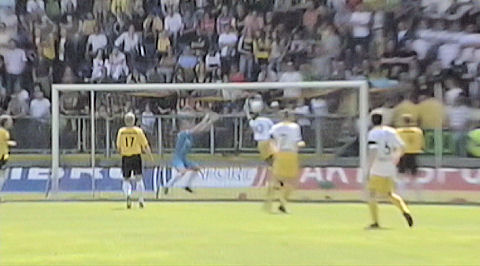
Ramzi scoort met een arm wat hem geen doelpunt maar wel een gele kaart oplevert.
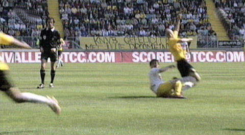
Overtreding van Meeuwis. Het spel gaat een tijdje door eer hier voor gefloten
wordt.
Even later is er een hoekschop voor Roda.
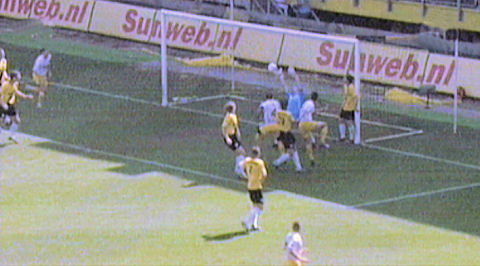
Uit deze hoekschop kopt Kah de bal achter Van Zwam: 0-1, (35').
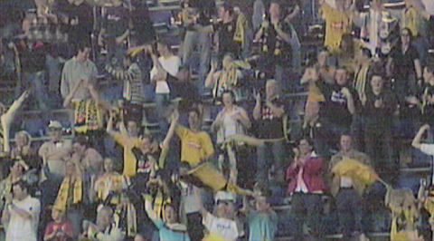
450 supporters van Roda waren mee.
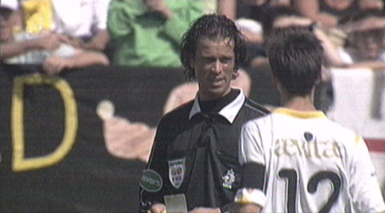
Vlak voor rust krijgt Sikora een tweede gele kaart. Omdat scheidrechter
Braamhaar
dat aanvankelijk niet door heeft komt De Fauw hem assisteren in een correcte
afwikkeling van de administratie. Alsnog rood voor Sikora zodoende.
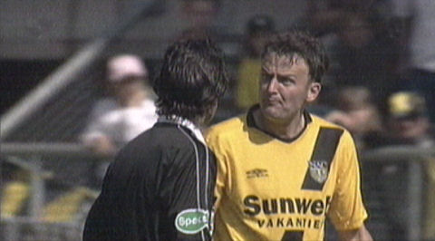
Hier het omgekeerde geval. Deze meneer komt Kah een gele kaart aansmeren.
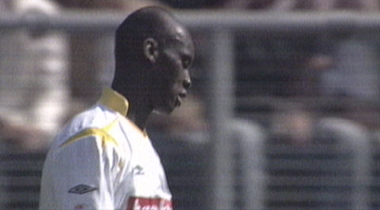
Met succes!
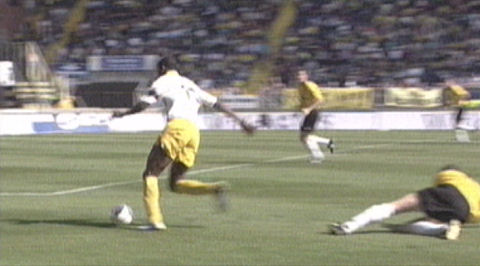
De voor Oper ingekomen Cissé swingt langs zijn tegenstanders en...
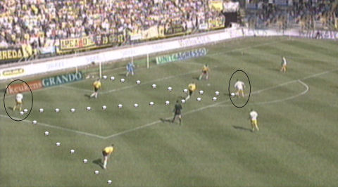
... passed op Ramzi die de bal controleert en vervolgens links inschiet: 0-2,
(73'). 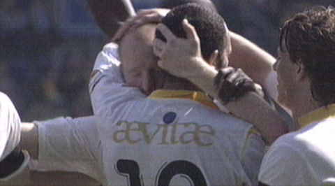
Het wordt nog spannend wie bij Roda topscorer wordt.
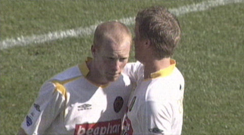
Na deze zege is Roda verzekerd van deelname UEFA-playoffs en maakt het nog
een kans OP CL-playoffs.
Voor Vincent Lachambre was deze wedstrijd een hele moedige daar zijn zoontje
deze week aan wiegendood overleed.
Condoléances aan de familie Lachambre en respect voor deze moeilijke beslissing!
© Koempels Pleasure Dome
|